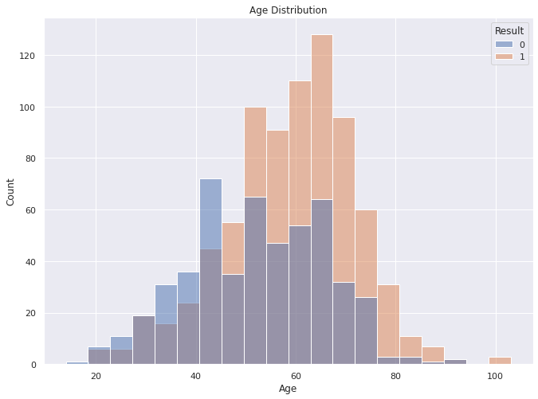
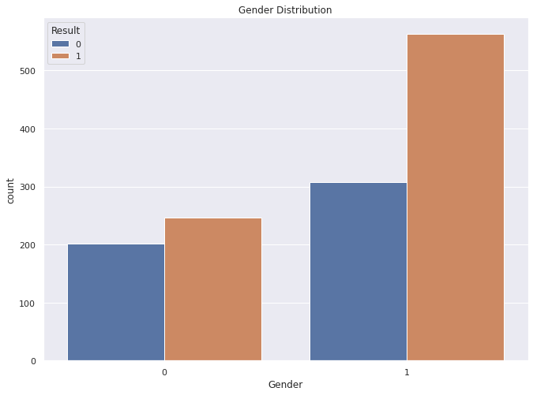
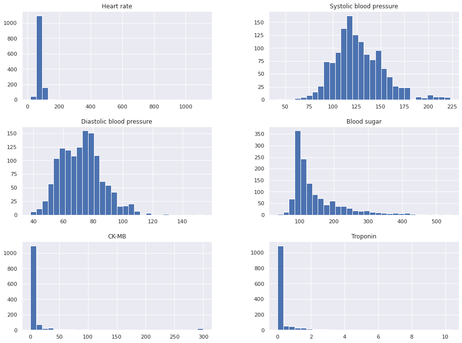
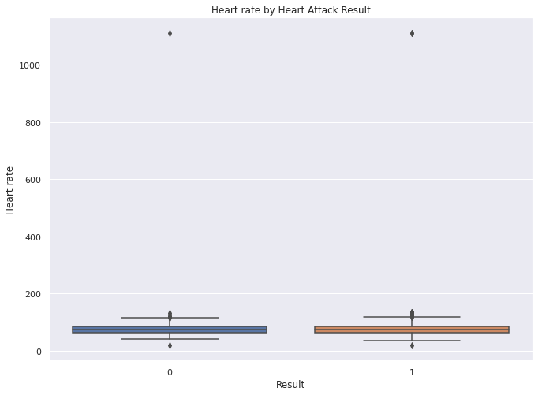
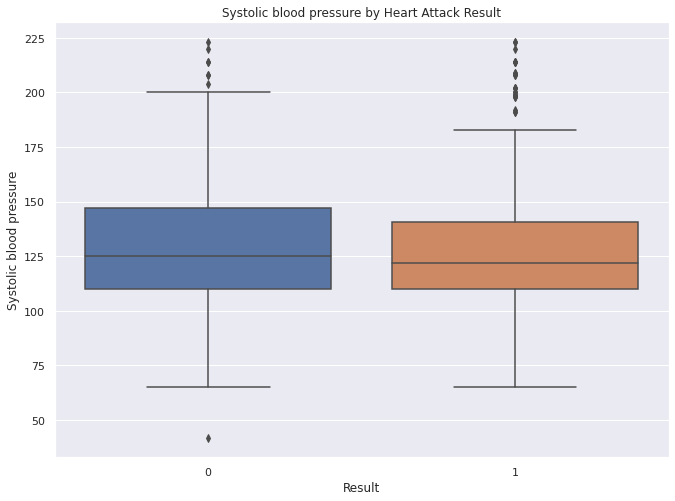
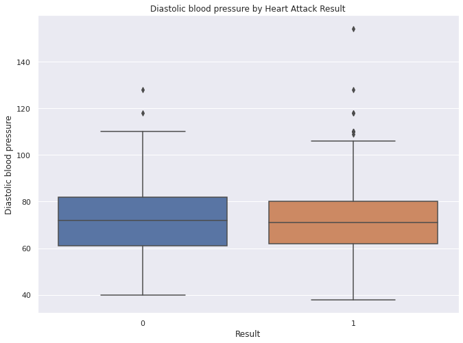
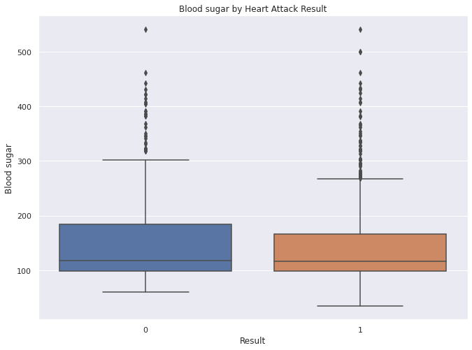
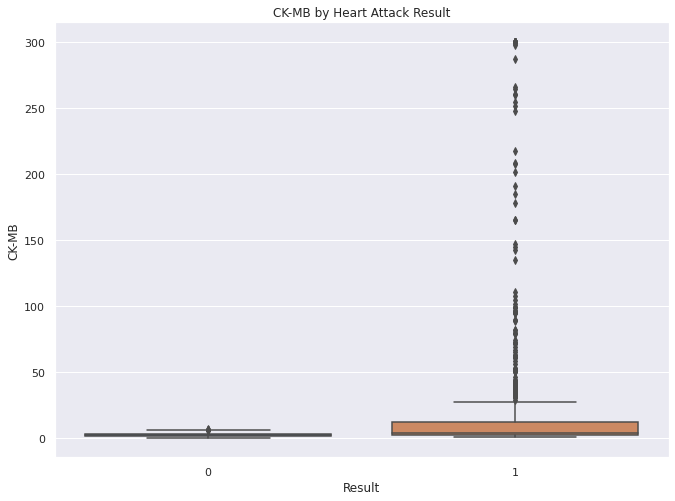
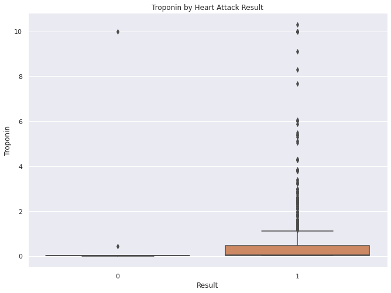

import pandas as pd
import seaborn as sns
import matplotlib.pyplot as plt
from scipy.stats import ttest_indAbout Data
According to the provided information, the medical dataset classifies either heart attack or none. The gender column in the data is normalized: the male is set to 1 and the female to 0. The glucose column is set to 1 if it is > 120; otherwise, 0. As for the output, positive is set to 1 and negative to 0.
The dataset has 9 column:
- Age: The patient’s age
- Gender: Biological sex of the patient (The male is set to 1 and the female to 0)
- Heart Rate: The number of heartbeats per minute
- Systolic Blood Pressure: The pressure in arteries when the heart contracts
- Diastolic Blood Pressure: The pressure in arteries between heartbeats
- Blood Sugar: The patient’s blood glucose level
- Ck-mb: A cardiac enzyme released during heart muscle damage
- 심장 근육에 존재하는 효소로, 심장 근육이 손상되면 방출된다.
- Troponin:A highly specific protein biomarker for heart muscle injury
- 심장 근육 수축에 관여하는 단백질
- Result: The outcome label indicating whether or not the patient experienced a heart attack
Import
Data
df = pd.read_csv("../../../../delete/Medicaldataset.csv")
df.head()| Age | Gender | Heart rate | Systolic blood pressure | Diastolic blood pressure | Blood sugar | CK-MB | Troponin | Result | |
|---|---|---|---|---|---|---|---|---|---|
| 0 | 64 | 1 | 66 | 160 | 83 | 160.0 | 1.80 | 0.012 | negative |
| 1 | 21 | 1 | 94 | 98 | 46 | 296.0 | 6.75 | 1.060 | positive |
| 2 | 55 | 1 | 64 | 160 | 77 | 270.0 | 1.99 | 0.003 | negative |
| 3 | 64 | 1 | 70 | 120 | 55 | 270.0 | 13.87 | 0.122 | positive |
| 4 | 55 | 1 | 64 | 112 | 65 | 300.0 | 1.08 | 0.003 | negative |
df['Result'] = df['Result'].map({'negative': 0, 'positive': 1})df['Result'].value_counts()1 810
0 509
Name: Result, dtype: int64EMA
- Age
sns.histplot(data=df, x='Age', hue='Result', bins=20)
plt.title("Age Distribution")
plt.xlabel("Age")
plt.ylabel("Count")Text(0, 0.5, 'Count')
- Gender
sns.countplot(x='Gender', hue='Result', data=df)
plt.title("Gender Distribution")Text(0.5, 1.0, 'Gender Distribution')
- Data distribution check
cols = ['Heart rate','Systolic blood pressure','Diastolic blood pressure','Blood sugar','CK-MB','Troponin']
df[cols].hist(figsize=(16,12),bins=30);
for col in cols:
sns.boxplot(x='Result', y=col, data=df)
plt.title(col + " by Heart Attack Result")
plt.show()





- ttest
for col in cols:
g0 = df[df['Result']==0][col]
g1 = df[df['Result']==1][col]
t,p = ttest_ind(g0,g1)
print(col, "p-value:", round(p,2))Heart rate p-value: 0.8
Systolic blood pressure p-value: 0.45
Diastolic blood pressure p-value: 0.73
Blood sugar p-value: 0.23
CK-MB p-value: 0.0
Troponin p-value: 0.0- data outliers
Values outside physiologically plausible ranges (e.g., heart rate > 250 bpm) were treated as data entry errors and set to missing.
df['Heart rate'].describe()count 1319.000000
mean 78.336619
std 51.630270
min 20.000000
25% 64.000000
50% 74.000000
75% 85.000000
max 1111.000000
Name: Heart rate, dtype: float64df.sort_values('Heart rate', ascending=False).head(5)| Age | Gender | Heart rate | Systolic blood pressure | Diastolic blood pressure | Blood sugar | CK-MB | Troponin | Result | |
|---|---|---|---|---|---|---|---|---|---|
| 1069 | 32 | 0 | 1111 | 141 | 95 | 82.0 | 2.66 | 0.008 | 0 |
| 717 | 70 | 0 | 1111 | 141 | 95 | 138.0 | 3.87 | 0.028 | 1 |
| 63 | 45 | 1 | 1111 | 141 | 95 | 109.0 | 1.33 | 1.010 | 1 |
| 682 | 68 | 1 | 135 | 98 | 60 | 96.0 | 254.40 | 0.025 | 1 |
| 1012 | 65 | 1 | 135 | 98 | 60 | 162.0 | 7.67 | 0.025 | 1 |
df = df[df['Heart rate'] < 250]df.sort_values('CK-MB', ascending=False).head(20)| Age | Gender | Heart rate | Systolic blood pressure | Diastolic blood pressure | Blood sugar | CK-MB | Troponin | Result | |
|---|---|---|---|---|---|---|---|---|---|
| 1209 | 59 | 1 | 87 | 148 | 89 | 431.0 | 300.0 | 1.230 | 1 |
| 82 | 50 | 1 | 93 | 119 | 63 | 174.0 | 300.0 | 0.888 | 1 |
| 28 | 47 | 0 | 66 | 134 | 57 | 279.0 | 300.0 | 0.007 | 1 |
| 997 | 86 | 1 | 60 | 154 | 81 | 112.0 | 300.0 | 1.790 | 1 |
| 651 | 70 | 1 | 100 | 169 | 91 | 303.0 | 300.0 | 0.015 | 1 |
| 472 | 31 | 1 | 61 | 102 | 64 | 104.0 | 300.0 | 0.003 | 1 |
| 1259 | 68 | 0 | 59 | 107 | 64 | 225.0 | 300.0 | 0.016 | 1 |
| 1215 | 63 | 1 | 101 | 102 | 63 | 166.0 | 300.0 | 0.022 | 1 |
| 451 | 63 | 1 | 60 | 117 | 68 | 226.0 | 300.0 | 0.025 | 1 |
| 1047 | 55 | 0 | 96 | 105 | 70 | 66.0 | 300.0 | 0.003 | 1 |
| 1280 | 31 | 1 | 72 | 117 | 49 | 184.0 | 300.0 | 0.005 | 1 |
| 732 | 60 | 1 | 70 | 117 | 61 | 146.0 | 300.0 | 0.007 | 1 |
| 741 | 29 | 1 | 76 | 157 | 93 | 228.0 | 300.0 | 0.003 | 1 |
| 7 | 63 | 1 | 60 | 214 | 82 | 87.0 | 300.0 | 2.370 | 1 |
| 97 | 19 | 0 | 62 | 114 | 69 | 240.0 | 300.0 | 0.004 | 1 |
| 393 | 66 | 1 | 62 | 105 | 70 | 290.0 | 300.0 | 0.016 | 1 |
| 924 | 73 | 0 | 90 | 95 | 50 | 98.0 | 300.0 | 0.015 | 1 |
| 185 | 66 | 1 | 69 | 129 | 73 | 215.0 | 300.0 | 0.005 | 1 |
| 103 | 66 | 0 | 70 | 113 | 62 | 266.0 | 300.0 | 0.012 | 1 |
| 677 | 76 | 1 | 73 | 114 | 68 | 144.0 | 297.5 | 0.024 | 1 |